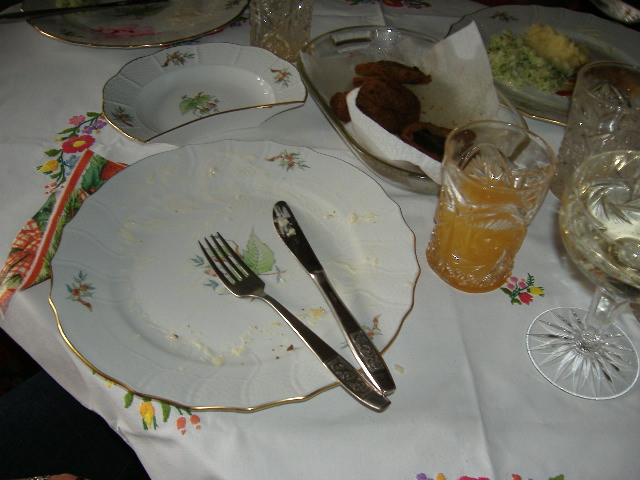

Családi finomságok
-
Levesek
-
Főételek
-
Desszertek
-
Az étkezésről

Jó napot kívánok!
Béresné Fehér Ágnes vagyok, a Béres család egyik idősebb női tagja.
Évek óta főzöm családjaink igen finom és népszerű ételeit,
amelyek kedvenceinkké is váltak.
Ezek családi hagyomány szerint évszakokhoz, ünnepnapokhoz köthetők,
de többségében hétköznap is gyorsan elkészíthető ételek.
Egyes általunk kedvelt ételek receptjei kiegészültek a korszerűbb és egéaszségesebb
táplálkozás alapanyagaival, például egy süteménynek lehet több változata is,
hiszen készíthető teljes kiörlésű lisztből, zabpehelylisztből.
A családi finomságok közt fiatal családtagok népszerű étkeinek leírásai is helyet kaptak az oldalakon.
Csak a desszertek hozzávalóit részleteztük, a leveseket és a főteleket mindenki az ízlése,
az adag /főzőedény nagysága szerint készítheti el.
Köszönet az édesanyámnak, az anyósomnak, lányaimnak e sokak által kedvelt családi finomságokért!